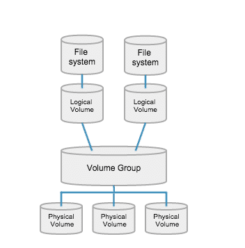

Why LVM instead of standard partition ? Easy to increase, decrease file system. PV - physcial volume VG - Logical Volume LV - Logical volume
 PV :- === [root@susi ~]# pvs ==> show pv list PV VG Fmt Attr PSize PFree /dev/sda2 centos lvm2 a-- <19.00g 0 [root@susi ~]# pvcreate /dev/sdb1 ==> create pv WARNING: xfs signature detected on /dev/sdb1 at offset 0. Wipe it? [y/n]: y Wiping xfs signature on /dev/sdb1. Physical volume "/dev/sdb1" successfully created. [root@susi ~]# pvdisplay ==> display all pvs --- Physical volume --- PV Name /dev/sda2 VG Name centos PV Size <19.00 GiB / not usable 3.00 MiB Allocatable yes (but full) PE Size 4.00 MiB Total PE 4863 Free PE 0 Allocated PE 4863 PV UUID hpje7c-sGuS-gxjC-vNQ1-uANJ-C8ZH-V5T9uc "/dev/sdb1" is a new physical volume of "500.00 MiB" --- NEW Physical volume --- PV Name /dev/sdb1 VG Name PV Size 500.00 MiB Allocatable NO PE Size 0 Total PE 0 Free PE 0 Allocated PE 0 PV UUID wayF3U-zLuS-Sb9v-TmBI-1Kkd-ZiM3-eP1tQq [root@susi ~]# pvremove /dev/sdb1 ==> remove pv VG :- === [root@susi ~]# vgs VG #PV #LV #SN Attr VSize VFree centos 1 2 0 wz--n- <19.00g 0 [root@susi ~]# vgcreate app_vg /dev/sdb1 Volume group "app_vg" successfully created [root@susi ~]# vgdisplay --- Volume group --- VG Name app_vg System ID Format lvm2 Metadata Areas 1 Metadata Sequence No 1 VG Access read/write VG Status resizable MAX LV 0 Cur LV 0 Open LV 0 Max PV 0 Cur PV 1 Act PV 1 VG Size 496.00 MiB PE Size 4.00 MiB Total PE 124 Alloc PE / Size 0 / 0 Free PE / Size 124 / 496.00 MiB VG UUID obhGD0-jXz6-YHbL-YSv3-YdNx-c53n-62Ae8X [root@susi ~]# vgremove app_vg LV :- ==== [root@susi ~]# vgs VG #PV #LV #SN Attr VSize VFree app_vg 1 0 0 wz--n- 496.00m 496.00m centos 1 2 0 wz--n- <19.00g 0 [root@susi ~]# lvs LV VG Attr LSize Pool Origin Data% Meta% Move Log Cpy%Sync Convert root centos -wi-ao---- <17.00g swap centos -wi-ao---- 2.00g [root@susi ~]# lvcreate -L 100M -n app app_vg Logical volume "app" created. [root@susi ~]# lvs LV VG Attr LSize Pool Origin Data% Meta% Move Log Cpy%Sync Convert app app_vg -wi-a----- 100.00m root centos -wi-ao---- <17.00g swap centos -wi-ao---- 2.00g [root@susi ~]# [root@susi ~]# mkfs -t xfs /dev/mapper/app_vg-app meta-data=/dev/mapper/app_vg-app isize=512 agcount=4, agsize=6400 blks = sectsz=512 attr=2, projid32bit=1 = crc=1 finobt=0, sparse=0 data = bsize=4096 blocks=25600, imaxpct=25 = sunit=0 swidth=0 blks naming =version 2 bsize=4096 ascii-ci=0 ftype=1 log =internal log bsize=4096 blocks=855, version=2 = sectsz=512 sunit=0 blks, lazy-count=1 realtime =none extsz=4096 blocks=0, rtextents=0 [root@susi ~]# mount /dev/mapper/app_vg-app /app [root@susi ~]# df -h /app Filesystem Size Used Avail Use% Mounted on /dev/mapper/app_vg-app 97M 5.2M 92M 6% /app [root@susi ~]# Cleanup :- ======== [root@susi ~]# lvremove /dev/mapper/app_vg-app Do you really want to remove active logical volume app_vg/app? [y/n]: y Logical volume "app" successfully removed [root@susi ~]# lvs LV VG Attr LSize Pool Origin Data% Meta% Move Log Cpy%Sync Convert root centos -wi-ao---- <17.00g swap centos -wi-ao---- 2.00g [root@susi ~]# vgs VG #PV #LV #SN Attr VSize VFree app_vg 1 0 0 wz--n- 496.00m 496.00m centos 1 2 0 wz--n- <19.00g 0 [root@susi ~]# vgremove app_vg Volume group "app_vg" successfully removed [root@susi ~]# pvs PV VG Fmt Attr PSize PFree /dev/sda2 centos lvm2 a-- <19.00g 0 /dev/sdb1 lvm2 --- 500.00m 500.00m [root@susi ~]# pvremove /dev/sdb1 Labels on physical volume "/dev/sdb1" successfully wiped. [root@susi ~]# pvs PV VG Fmt Attr PSize PFree /dev/sda2 centos lvm2 a-- <19.00g 0 [root@susi ~]#